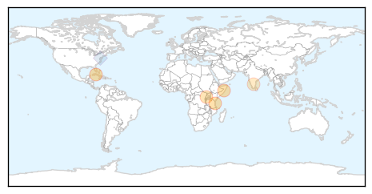
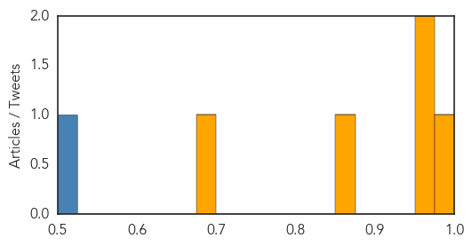

Swine Flu
30-Day Web Trend
0 alerts, 0 warnings

30-Day Twitter Trend
0 alerts, 0 warnings

Article Locations

Article Confidences

Top Articles:
- 1.000
- Watch Out For That Cold, Guard Against H1N1: Docs
- 0.999
- Antigua Observer Newspaper
- 0.992
- Cardiologist runs swine flu ward!
- 0.972
- KUNA : Health Ministry continues to send patients to France despite Paris attacks
- 0.960
- Suspected case of death by H1N1 in Trichy
- 0.553
- Medical officials at San Fernando General Hospital cautions citizens about panicking over two recent swine flu deaths
Top Tweets:
-
No tweets found for Nov 16, 2015
Cholera
30-Day Web Trend
4 alerts, 1 warnings

30-Day Twitter Trend
0 alerts, 0 warnings

Article Locations
Article Confidences
Top Articles:
Top Tweets:
- 0.516
- RT: Practice good hand washing and food & water precautions in Tanzania; read more in our cholera travel notice: https://t.co/…